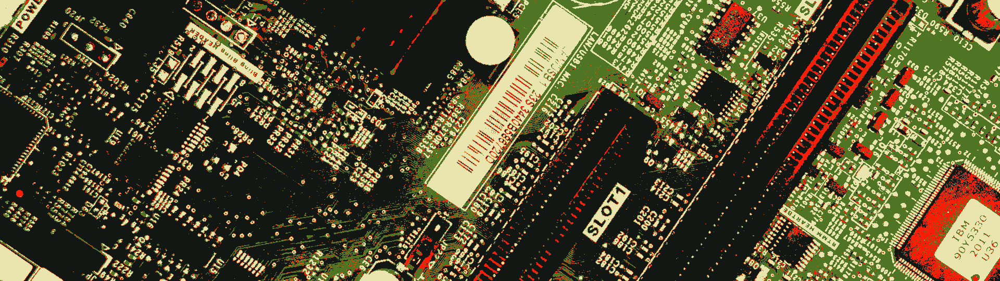

Hardware
Libertas
Libertas é o nome do meu computador principal, um laptop Acer que eu uso para basicamente tudo.
Originalmente ele tinha um SSD de 256 GB com Windows, mas eu comprei e instalei um SSD SATA 2.5" de 1 TB para fazer dual boot com Linux
Especificações:
- Modelo: Acer Aspire A514-53
- Processador: Intel Core i5 de 10º geração
- Memória: 8GB DDR4
- Armazenamento: 256GB + 1TB SSD
Hefesto
Hefesto é um Netbook da Positivo de 2012, que eu usei durante a pandemia nas aulas on-line, que foi basicamente abandonado após isso. até 2025 quando eu revivi ele.
Esse netbook escapou das garras da morte 2 vezes. Ele já não funcionava a um bom tempo quando foi levado ao conserto para eu usar nas aulas online. À medida que as aulas presenciais voltavam, ele foi abandonado. Em 2025, eu tentei usar ele e descobri que ele havia ficado basicamente inutilizável com o Windows 7, demorando minutos para bootar, e mais ainda para abrir qualquer programa, além da bateria estar morta. Usando meu conhecimento sobre linux eu tentei por um tempo instalar alguma distribuição leve nele, mas acabei desistindo de instalar uma distribuição gráfica, e instalei arch linux sem nenhuma interface gráfica.
Mais recentemente eu instalei Kali por ser uma distribuição bem leve e para eu usar o arduino IDE na escola sem precisar do meu computador principal, além das ferramentas de pentester que eu vou estudar.
Especificações:
- Modelo: Positivo Mobo 5000
- Processador: Intel Atom N455
- Memória: 2GB DDR2
- Armazenamento: 256GB HD
Apollo
O mp3 mais barato que eu consegui encontrar com envio nacional. O auto-falante dele é horrivel, mas o fone que veio com ele é até que decente. A bateria é bem bosta mas ela tabém carrega rápido então não é tão ruim. Ele também não veio com um cartão de memória.
No anúncio dizia que tocava mp4 mas o formato de vídeo suportado é um .avi com configurações bem específicas. eu dei sorte de encontrar um comando que converte .mp4 para esse formato. Mas mesmo assim essa funcionalidade é meio inútil. O comando para converter é: ffmpeg -i video.mp4 -vf "scale=160:128, transpose=2, vflip" -r 16 -acodec pcm_s16le -ac 2 -ar 22050 -pix_fmt yuvj420p -c:v mjpeg -q:v 2 video.avi
Eu abri ele pra ver se conseguia rodar algum linux, mas não tem um processador normal, só um decodificador de áudio Jointbees. O firmware dele é: yp3_2.0.43
Especificações:
- Armazenamento: 32GB MicroSD